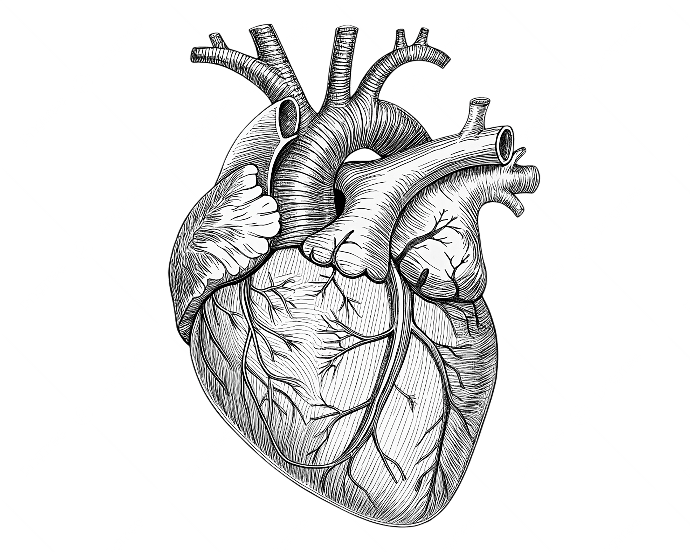

One afternoon, the man almost destroyed his entire work, but then changed his mind. (It would have been better had he destroyed it.) When he had exhausted all supplications to the deities of earth, he threw himself at the feet of the effigy which was perhaps a tiger or perhaps a colt and implored its unknown help. That evening, at twilight, he dreamt of the statue. He dreamt it was alive, tremulous: it was not an atrocious bastard of a tiger and a colt, but at the same time these two firey creatures and also a bull, a rose, and a storm. This multiple god revealed to him that his earthly name was Fire, and that in this circular temple (and in others like it) people had once made sacrifices to him and worshiped him, and that he would magically animate the dreamed phantom, in such a way that all creatures, except Fire itself and the dreamer, would believe to be a man of flesh and blood. He commanded that once this man had been instructed in all the rites, he should be sent to the other ruined temple whose pyramids were still standing downstream, so that some voice would glorify him in that deserted ediface. In the dream of the man that dreamed, the dreamed one awoke.
